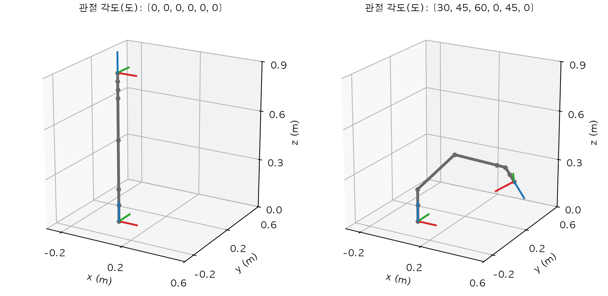
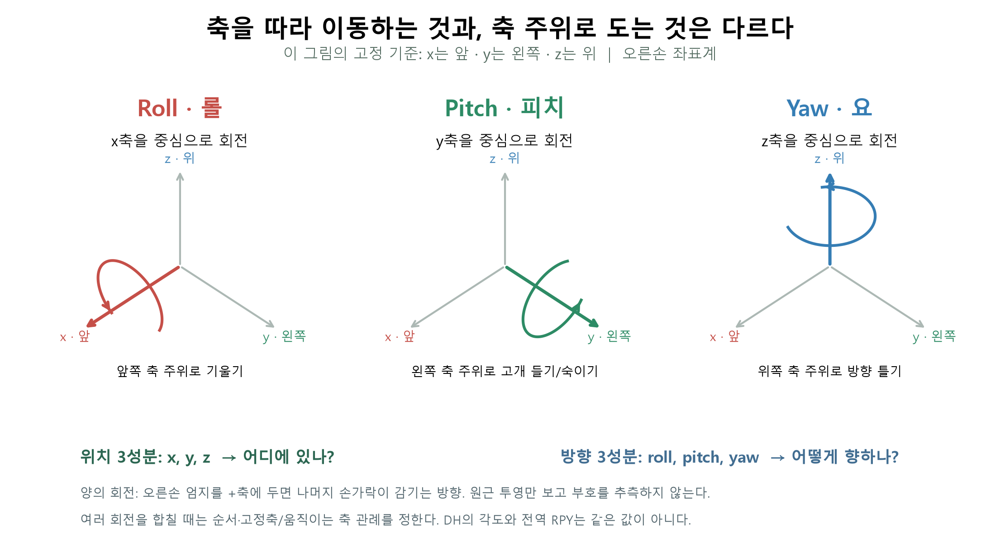

관절이 둘에서 여섯으로 늘어도 방법은 하나입니다. 부모 좌표계에서 “이동하고, 그 축으로 돌린다”를 관절 수만큼 이어 붙입니다. 이번 페이지에서는 그 반복이 만든 여섯 관절 팔의 손끝 위치와, 손끝이 어느 쪽을 보는지까지 함께 읽습니다.
부모의 안내를 받아 다음 관절로

숫자·공식·코드로 이어 보기
친구가 “우리 집에서 오른쪽으로 10m”라고 말하면, 먼저 그 친구 집의 위치와 오른쪽 방향을 알아야 합니다. 로봇 관절도 같습니다. 각 관절은 바로 앞 관절 기준의 위치와 자기가 도는 축을 기록합니다. 그래서 7쪽의 사슬이 필요했습니다.
이 교안의 6관절 팔은 허리(z축), 어깨(y축), 팔꿈치(y축), 손목1(z축), 손목2(y축), 손목3(z축) 순서입니다. 앞 관절에서 다음 관절까지의 간격은 차례로 z방향 0.10, 0.10, 0.30, 0.25, 0.05, 0.05m이고, 마지막에 손끝까지 0.05m를 더합니다. 이 숫자들은 전부 각자의 부모 좌표계 기준이라는 점이 핵심입니다. 바닥 기준으로 재서 적으면 관절이 돌 때마다 값이 달라져 쓸 수 없습니다.
모든 관절이 0°인 자세를 먼저 확인합니다. 링크가 수직으로 곧게 쌓이므로 손끝 높이는 간격을 그대로 더한 0.10+0.10+0.30+0.25+0.05+0.05+0.05=0.90m입니다. 손끝은 (0, 0, 0.9)m. 1쪽의 2링크 예제에서 [0,0]이 (0.7,0)이었던 것과 같은 종류의 확인입니다. 각도를 하나도 넣지 않았을 때 나오는 값부터 구조와 맞는지 봐야 합니다.
for문 한 줄이 팔 전체를 계산하는 이유
T = np.eye(4)
for fixed_position, axis, angle in joints:
T = T @ translation(fixed_position) @ axis_rotation(axis, angle)
frames.append(T.copy())
tip = T @ translation(tip_offset)eye(4)는 아무것도 옮기거나 돌리지 않는 출발점입니다. 반복할 때마다 이전까지 쌓은 길 안내 뒤에 새 안내를 붙입니다. frames에 중간 결과를 저장해 두면 팔꿈치나 손목이 세계 어디에 있는지도 나중에 꺼낼 수 있습니다.
순서가 바뀌면 결과가 달라집니다. “이동한 다음 회전”과 “회전한 다음 이동”은 다른 자세입니다. 각 관절마다 어느 쪽인지가 구조의 일부입니다.
이 부모–자식 구조는 URDF나 MuJoCo의 XML에도 같은 모양으로 들어 있습니다. 다만 이름을 정확히 구분해야 합니다. URDF는 로봇 구조를 적는 형식이고, 순기구학은 그 구조와 관절값으로 위치를 계산하는 절차입니다. 둘은 같은 말이 아닙니다. 또 각 관절의 부모는 바로 위 링크(예: 팔꿈치 관절의 부모는 위팔)이고, 베이스는 트리 전체의 루트입니다. 베이스가 모든 링크의 직접 부모라는 뜻은 아닙니다. 베이스를 움직이면 자손이 전부 따라 움직인다는 성질은 여기서 나옵니다.
손끝의 위치와 향하는 방향은 따로 읽습니다

숫자·공식·코드로 이어 보기
컵을 잡으려면 손이 컵에 도착하는 것만으로 부족하고, 손바닥이 컵을 향해야 합니다. 위치와 방향을 묶어 포즈라고 합니다. 동차 변환은 이 둘을 한 행렬에 담으므로, 위치는 오른쪽 위 세 칸, 방향은 왼쪽 위 3×3에서 꺼냅니다.
관절각 [30, 45, 60, 0, 45, 0]°를 넣으면 손끝은 (0.478, 0.276, 0.248)m이고, 도구의 z축 방향은 (0.433, 0.250, −0.866)입니다. 이 두 숫자가 구조와 맞는지 검산해 보겠습니다. y/x=0.276/0.478=0.577은 tan30°입니다. 허리가 30° 돌아간 평면 위에 팔이 서 있다는 뜻입니다.
방향 벡터도 같은 방식으로 읽힙니다. 어깨·팔꿈치·손목2의 y축 회전을 모두 더하면 45+60+45=150°입니다. 도구 z축의 높이 성분 −0.866은 cos150°이고, 수평 성분의 크기 0.5는 sin150°입니다. 그 0.5가 허리 방향 (cos30°, sin30°)을 따라 놓이므로 (0.5×0.866, 0.5×0.5)=(0.433, 0.250)이 됩니다. z성분이 음수라는 것은 도구가 아래를 본다는 뜻이고, 컵 위에서 집게를 내리는 자세와 맞습니다.
행렬의 어느 칸을 꺼내나요?
q = np.deg2rad([30, 45, 60, 0, 45, 0])
# 교안의 순기구학 함수는 마지막 손끝 간격까지 포함한 좌표계들을 돌려준다.
T = 순기구학(q)[-1]
position = T[:3, 3] # 마지막 열의 위 세 칸
tool_z = T[:3, 2] # 회전 부분의 세 번째 열먼저 이 q로 순기구학을 다시 계산합니다. 위 코드는 교안의 순기구학 함수를 쓰므로 마지막 원소가 손끝 변환입니다. 9쪽의 축약 반복문처럼 관절 좌표계만 저장했다면 frames[-1] @ translation(tip_offset)으로 마지막 간격을 추가해야 합니다. 손목3의 원점과 손끝을 섞지 마세요.
위치의 단위는 m입니다. tool_z는 길이 1인 방향 벡터이므로 단위가 없습니다. 위치만 맞고 도구 축이 반대라면 잡기 자세는 실패입니다. 두 값을 따로 확인해야 하는 이유입니다.
방향을 숫자 세 개로 부르는 이름: roll, pitch, yaw
방향을 여섯 숫자 중 세 개로 적는다고 했는데, 그 세 개에 붙은 이름이 있습니다. 로봇에서 흔히 쓰는 오른손 좌표계 x앞, y왼쪽, z위를 기준으로, roll은 x축 주위, pitch는 y축 주위, yaw는 z축 주위 회전입니다.
| 이름 | 회전축 | 몸으로 떠올리기 |
|---|---|---|
| roll | x축 주위 | 몸을 좌우로 기울이기 |
| pitch | y축 주위 | 앞뒤로 끄덕이기 |
| yaw | z축 주위 | 좌우로 방향 돌리기 |
x축을 따라 앞으로 이동하는 것과 x축을 중심으로 회전하는 roll은 다른 움직임입니다. 이름이 축을 가리키는지, 그 축을 따라가는지를 구분하세요. 그리고 세 회전을 함께 적용할 때는 어떤 순서로, 고정된 축 기준인지 움직인 축 기준인지를 밝혀야 같은 숫자가 같은 방향을 뜻합니다. 12쪽 DH의 θ와 α는 각 행에서 정한 로컬 z축·x축 회전이므로, 로봇 전체의 yaw·roll과 그대로 같다고 읽지 않습니다.
3차원 팔 그림을 읽는 순서
그림을 예쁘게 보는 것이 목적이 아닙니다. 숫자와 그림이 같은 자세를 말하는지 확인하는 검산 도구입니다. 위치가 맞는데 도구 축만 반대라면 방향 계산을 다시 봐야 하고, 둘 다 틀렸다면 앞 관절의 간격이나 축부터 확인해야 합니다.
숫자·공식·코드로 이어 보기
- 모든 각도가 0인 그림에서 링크가 수직으로 곧게 쌓였는지 봅니다. 9쪽에서 계산한 0.9m 높이가 눈으로 확인되어야 합니다.
- 굽힌 그림에서 허리 회전 때문에 팔 전체가 어느 평면을 향하는지 봅니다. 10쪽의 tan30° 검산이 이 평면입니다.
- 손끝의 파란 z축이 아래를 향하는지 확인합니다. 10쪽의 −0.866이 그 값입니다.
DH는 로봇 구조를 네 숫자로 적는 약속
같은 주소를 도로명으로도 좌표로도 적을 수 있듯, 로봇 구조를 적는 방법도 여럿입니다. DH 파라미터는 정해진 좌표계 약속 아래 관절 사이 관계를 네 값으로 기록합니다. 9쪽의 “위치 + 축” 방식과 같은 로봇을 다른 표기로 적은 것입니다.
숫자·공식·코드로 이어 보기
| 기호 | 이 교안에서의 뜻 |
|---|---|
| θ | z축 주위 회전 |
| d | z축 방향 이동 |
| a | x축 방향 이동 |
| α | x축 주위 회전 |
평면 2링크는 d와 α가 0이고 a가 각각 0.4, 0.3m이므로, 6쪽의 결과와 같아져야 합니다. 실제로 (30°, 45°)에서 위치 (0.424, 0.490, 0)m가 나옵니다. 같은 로봇을 두 약속으로 적었으니 답이 같아야 하고, 다르면 둘 중 하나를 잘못 적은 것입니다.
숫자 하나만 바꿔 보면 네 값의 역할이 갈립니다. 평면 예에서 θ₁=30°·θ₂=45°를 고정하고 첫 a만0.4→0.5m로 늘리면 손끝은 위팔 방향으로0.1(cos30°,sin30°)=(0.0866,0.05)m 더해져 (0.5107,0.5398)m가 됩니다. θ만 바꾸는 것은 실제 관절 회전, a를 바꾸는 것은 다른 길이의 로봇을 정의하는 일입니다. 이 표준 DH의 첫 d만0→0.1m로 바꾸면 고정z축 방향의 높이 간격이 생기고, 첫 α를0→90°로 바꾸면 다음 링크가 도는 축이 기울어집니다. 카메라 시점을 바꾸는 조작과는 모두 다릅니다.
3차원에서는 좌표축을 어떻게 붙이느냐와 표준/수정 DH 관례에 따라 표가 달라집니다. 남의 표를 받으면 외우기 전에 모든 관절이 0인 자세의 손끝부터 실제 구조와 맞춰 보세요. 9쪽에서 0.9m를 확인한 것과 같은 검산입니다.
배운 뒤에 스스로 확인하기
변환의 오른쪽부터 점을 따라가기
아래 두 문제는 7쪽과 9쪽에서 쓴 순서 규칙을 한 번 더 적용하는 것입니다. 곱을 말로 읽지 말고, 오른쪽 연산부터 점의 좌표를 적어 보세요.
확인 문제 두 개 펼치기
행렬이 여섯 개로 늘어도 규칙은 같습니다. 오른쪽 끝에서 시작해 좌표를 한 번에 하나씩 옮겨 가며 읽으면 됩니다. DH 3D 실험실에서 파라미터 하나만 바꾸고 손끝 위치와 도구 방향을 각각 관찰하면, 위치와 방향을 따로 읽어야 하는 이유가 눈에 남습니다.
수업 근거와 원문 보기
교안 9~12쪽을 하나의 설명으로 다시 썼습니다. 6관절 수치는 교안이 제시한 값을 그대로 옮기고, 검산은 이 해설에서 계산했습니다.
| 쪽 | 이 수업에서 맡은 내용 | 원문 |
|---|---|---|
| 9 | 부모 기준 이동·회전 누적, 간격 0.10/0.10/0.30/0.25/0.05/0.05, 영점 0.9m | 교안 9쪽 |
| 10 | 위치와 방향, (0.478,0.276,0.248), 도구 z (0.433,0.250,−0.866) | 교안 10쪽 |
| 11 | 영점·굽힌 자세 그림 읽기 | 교안 11쪽 |
| 12 | DH 네 파라미터와 2링크 환산 | 교안 12쪽 |
| 보충 | roll·pitch·yaw 이름과 축 구분 | 교과서 2.4 · 사용자 수업 메모 |
0.9m, (0.478,0.276,0.248), (0.433,0.250,−0.866)은 교안이 제시한 값이고, 이 해설에서 MuJoCo나 예제를 새로 실행한 결과가 아닙니다. tan30°·cos150° 검산과 DH의 (0.424,0.490) 일치는 같은 값으로 다시 계산해 확인했습니다. roll·pitch·yaw는 교과서 2.4와 사용자 메모를 참고했으며, DH의 로컬축 회전을 전역 회전 이름과 동일시하지 않도록 적었습니다. 3장 원고 전체